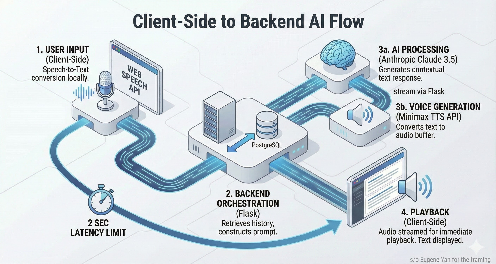

The Challenge
Most language apps (like Duolingo) focus on vocabulary and grammar drills, but fail to prepare users for the anxiety of real-time conversation. I wanted to build a tool that forces the user to speak, not just tap buttons.
The technical hurdle was latency. A conversation loop (User Speak → Transcribe → LLM Think → TTS → Audio Playback) usually takes 4-5 seconds. This destroys immersion. I needed to get it under 2 seconds while maintaining conversation quality.
System Architecture

Spralingua System Architecture
Key Technical Implementation
Managing context history was crucial. I implemented a rolling-window context manager in Python to ensure the AI remembers the conversation without exceeding token limits or increasing costs.
def update_history(self, user_input, ai_response):
self.history.append({"role": "user", "content": user_input})
self.history.append({"role": "assistant", "content": ai_response})
if len(self.history) > 20:
self.history = self.history[-20:]
return self.history
Grammar Correction Engine
The app doesn't just correct errors - it explains why something is wrong. I engineered specialized prompts that leverage my C2-level German knowledge to provide pedagogically sound corrections.
GRAMMAR_PROMPT = """
You are a language tutor. When the user makes a mistake:
1. Identify the specific error type (case, gender, word order)
2. Provide the corrected version
3. Explain the rule in simple terms
4. Give one similar example for practice
Always be encouraging - mistakes are learning opportunities.
"""
App Screenshots

AI Conversation Practice

Grammar Correction

Character Selection

Main Dashboard